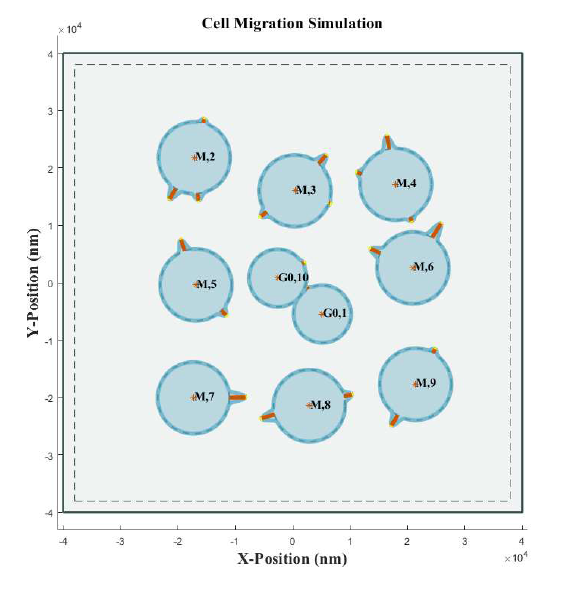
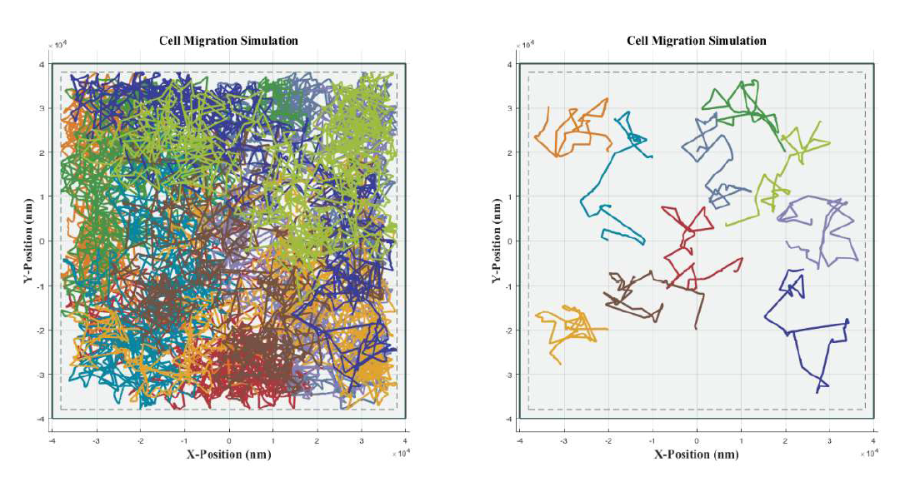
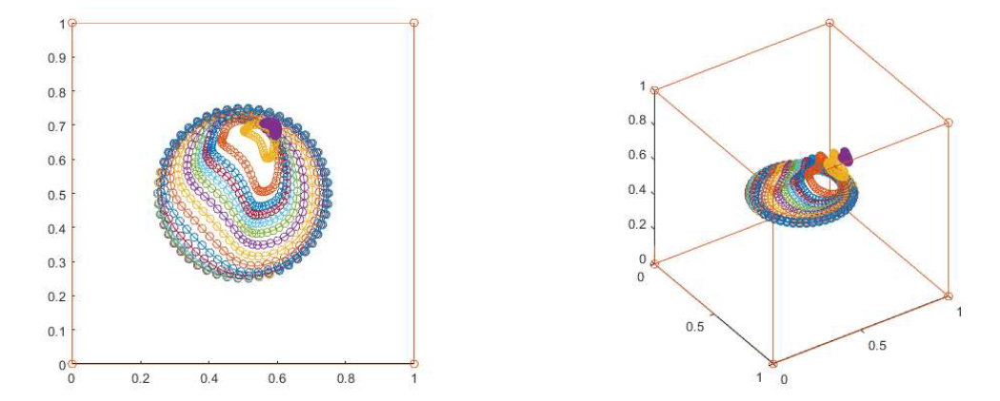

Lu Cheng Yi
Acousitc Engineer at PAL Acoustics Technology Ltd.
Experience
(a) Mechanical Engineering, Bachelor Degree, NTU
(b) Bio Mechanical Engineering, Master Degree, NTU
(c) Equipment Engineer, Lithography, RDPC, TSMC
(d) Acoustic Engineer, PAL Acoustic Technology Ltd.
(b) Bio Mechanical Engineering, Master Degree, NTU
(more)


Graduate student in Ophthalmology Biomechanics Laboratory in
National Taiwan University. My research includes fluid mechanic in eyes, cell migration model of
endothelial cells, CFD of M-phase in cytokinesis, endothelial cell shape classification for cultivation.
(c) Equipment Engineer, Lithography, RDPC, TSMC
(d) Acoustic Engineer, PAL Acoustic Technology Ltd.
(more)

Responsible for:
(1) Speech qualification: Alexa Voice Service (AVS)
(2) Audio system qualification: Intel Athena SPET test for NB audio system
(3) Stylus test: Wacom UPF stylus performance test
(4) Google functional qualification: Fast Pair (FP), Smart Audio Source Switching (SASS)
Contact
b04502057@ntu.edu.tw